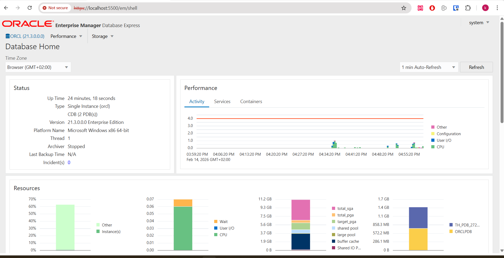
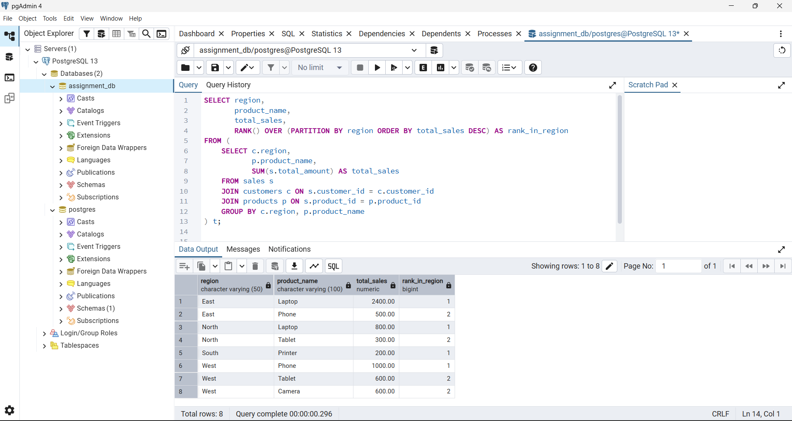
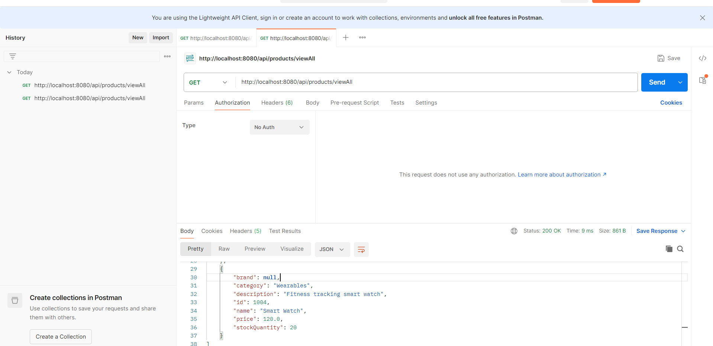

Featured Projects
What I built, how I built it, and what it delivered.
Umurabyo Smart Delivery Platform
What I did: Part of the team building a multi-tenant delivery-management platform where delivery companies manage drivers, vehicles, GPS devices, orders and dispatch. I worked on the web portal and the platform admin console, and on the billing, notifications, observability and security work behind them.
- Built the company web portal: dispatch, drivers, vehicles, branches, GPS tracker requests, team and settings
- Built the admin console: tenants, subscriptions, plans and payments, devices and provisioning, system health and audit screens
- Subscriptions, invoicing and manual payments, plus an inbox and notification dispatcher
- Tracing, scrubbed logs, alert rules and dashboards, then security hardening, audit integrity, backup and recovery drill
- Multi-country by design: each company carries its own country, currency, timezone and locale
eBuzima Healthcare Platform (Frappe / ERPNext)
What I did: Developing a customised ERPNext + Frappe Healthcare hospital information system for Rwanda's health sector. I'm still working on it.
- Converted NCD Screening, NCD Management and Mental Health Care into custom DocTypes
- Built clinical worklist dashboards (NCD, ANC and maternity, family planning, laboratory) with stat cards and patient file views
- Demo-data seeding so every dashboard has realistic rows, switchable per site
- Branding and sidebar work: hid stock ERPNext workspaces and gave each desk its own icon
- Fixed the CI/CD pipeline so only merges to main deploy and runs no longer cancel each other
ZiSchool OS
What I did: Contributed to a multi-tenant education operating system, a browser-based "desktop" that hosts a school's apps (student affairs, finance, attendance, examination, communication).
- Built Rwanda Education Board features: streams, second-sitting marks, grade points and Ministry-format report cards
- Per-subject national weights and an examined-nationally setting
- Guardian records with ID, address and phone, picking from parents on file, and spreadsheet import
- Absence alerts to guardians, and a backup snapshot before any data purge
- Multilingual wording (English, French, Swahili)
Online Voting System
What I did: Built a full-stack voting platform with Spring Boot 3, Spring Security and PostgreSQL, with both a Thymeleaf web UI and a REST API tested in Postman.
- Role-based access for Admin, Candidate and Voter
- Designed a 10-entity ERD covering a 5-level Rwanda location hierarchy (Province to Village)
- Users store only a village ID; the full location chain is resolved automatically
- Pagination and sorting, plus One-to-One, One-to-Many and Many-to-Many relationships
existsBy()duplicate checks and a JPQL query to find users by province code or name

Wazuh SIEM Deployment
What I did: Deployed an all-in-one Wazuh SIEM and connected remote agents over a ZeroTier overlay network.
- Remote agents reporting securely into a central SIEM
- Configured custom log monitoring and alerting rules

Oracle 21c PDB Management
What I did: Administered Oracle 21c Multitenant: created and managed Pluggable Databases from SQL*Plus and Oracle Enterprise Manager.
- Created and opened a main PDB, then verified it through
V$PDBS - Created a user in the PDB with CONNECT and RESOURCE privileges
- Ran the full PDB lifecycle: create, close, then drop a temporary PDB including datafiles
- Confirmed everything in the OEM dashboard
- Diagnosed and fixed an ORA-01031 privilege error by reconnecting as SYSDBA in CDB$ROOT

SQL JOINs & Window Functions
What I did: Analysed a retail dataset (customers, products, sales) to answer a marketing and inventory business problem.
- Applied five JOIN types: INNER, LEFT, RIGHT, FULL and SELF
- Used RANK, SUM OVER, LAG and NTILE for rankings, running totals, month-over-month growth and customer segments
- Produced descriptive, diagnostic and prescriptive findings: focus marketing on top regions and loyal customers

E-Commerce REST API
What I did: Designed a product-management REST API with Spring Boot and JPA, using a layered Controller / Service / Repository / Model architecture.
- Full CRUD: add, view all, view by ID, update and delete
- Duplicate-ID checks and correct HTTP status codes (conflict, not found)
- Every endpoint tested in Postman
- Resolved Spring Web annotation import issues to get all operations working
Java OOP Fundamentals
What I did: Implemented classes, inheritance, polymorphism and encapsulation across ten independent Java console applications (hospital, school, invoicing and more).
- 10 self-contained modules, each with entities, custom exceptions and business-rule validation
- An interactive runner plus a deterministic test harness for every module
- A shared
StudentOutpututility that wrapsSystem.outto prefix all output centrally
Performance Management System
What I did: Designed and developed a web-based OKR & KPI tracking platform as a module of a Laravel business-management system. Led requirements gathering, database design, backend logic and testing.
- Managers set objectives and assign key results
- Live KPI progress monitoring and performance reports
- Added a Kanban board, project members and permission-controlled documentation access
- Built a payment voucher with Excel export and a rich-text documentation editor
- Fixed the time-off module: calendar actions, leave creation, state badges, null-safety and query scoping
NHIP Digital Inspection Monitoring Tool
What I did: Frontend Engineer on a platform that digitises health inspection processes.
- Built responsive interfaces and worked with backend developers on system requirements
- Role-based access control: permission-driven UI, role and user management
- Compliance questionnaires with sections, skip logic and ordering, plus facility-type and user management
- Trained end users and iteratively improved the UI from their feedback